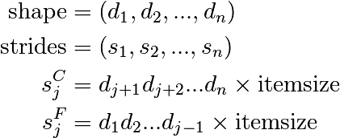
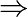
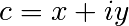
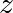
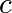
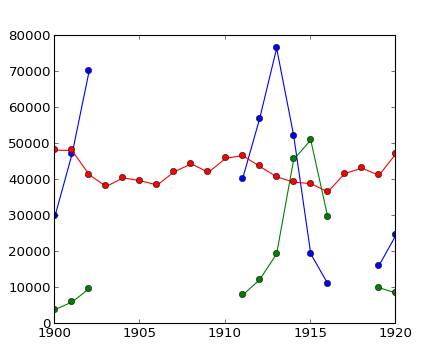

2.2. Numpy avanzado¶
| autor: | Pauli Virtanen |
|---|
Numpy se encuentra en la base del montón de herramientas científicas de Python. Su propósito es simple: implementar operaciones eficientes sobre muchos items en un bloque de memoria. Entender detalladamente como funciona sirve de ayuda para poder hacer un uso más eficiente de su flexibilidad, usando útiles atajos y creando nuevo trabajo basado en él.
Este tutorial pretende cubrir:
- Anatomía de los Numpy arrays y sus consecuencias. Consejos y trucos.
- Funciones universales: qué, porqué y qué hacer si quieres una nueva.
- Integración con otras herramientas: Numpy ofrece varias formas para ‘meter’ cualquier dato en un ndarray, sin crear copias innecesarias.
- Características añadidas recientemente y qué hay en ellas para mí: PEP 3118 buffers, ufuncs generalizadas, ...
Preerequisitos
- Numpy (>= 1.2; preferiblemente versiones más nuevas...)
- Cython (>= 0.12, para el ejemplo con Ufunc)
- PIL (usado en un par de ejemplos)
En esta sección numpy será importado de la siguiente forma:
>>> import numpy as np
Chapter contents
2.2.1. Vida de un ndarray¶
2.2.1.1. Esto es...¶
ndarray =
bloque de memoria + esquema de indexación + descriptor del tipo de dato
- Dato bruto (raw data)
- Cómo localizar un elemento
- Cómo interpretar un elemento

typedef struct PyArrayObject {
PyObject_HEAD
/* Block of memory */
char *data;
/* Data type descriptor */
PyArray_Descr *descr;
/* Indexing scheme */
int nd;
npy_intp *dimensions;
npy_intp *strides;
/* Other stuff */
PyObject *base;
int flags;
PyObject *weakreflist;
} PyArrayObject;
2.2.1.2. Bloque de memoria¶
>>> x = np.array([1, 2, 3, 4], dtype=np.int32)
>>> x.data
<read-write buffer for ..., size 16, offset 0 at ...>
>>> str(x.data)
'\x01\x00\x00\x00\x02\x00\x00\x00\x03\x00\x00\x00\x04\x00\x00\x00'
Dirección en memoria de los datos:
>>> x.__array_interface__['data'][0]
64803824
Recordatorio: dos ndarrays deben compartir la misma memoria:
>>> x = np.array([1, 2, 3, 4])
>>> y = x[:-1]
>>> x[0] = 9
>>> y
array([9, 2, 3])
La memoria no tiene que pertenecer a un ndarray:
>>> x = '1234'
>>> y = np.frombuffer(x, dtype=np.int8)
>>> y.data
<read-only buffer for ..., size 4, offset 0 at ...>
>>> y.base is x
True
>>> y.flags
C_CONTIGUOUS : True
F_CONTIGUOUS : True
OWNDATA : False
WRITEABLE : False
ALIGNED : True
UPDATEIFCOPY : False
Los flags owndata y writeable indican el estátus de la memoria.
2.2.1.3. Tipos de datos¶
2.2.1.3.1. El descriptor¶
dtype describe un único item en el array:
| type | scalar type de los datos, puede ser uno de: int8, int16, float64, et al. (tamaño fijo) str, unicode, void (tamaño flexible) |
| itemsize | tamaño del bloque de datos |
| byteorder | byte order: big-endian > / little-endian < / not applicable | |
| fields | sub-dtypes, si es un tipo de datos estructurados |
| shape | forma del array, si es un sub-array |
>>> np.dtype(int).type
<type 'numpy.int64'>
>>> np.dtype(int).itemsize
8
>>> np.dtype(int).byteorder
'='
2.2.1.3.2. Ejemplo: leyendo ficheros .wav¶
El cabecero del fichero .wav:
| chunk_id | "RIFF" |
| chunk_size | 4-byte unsigned little-endian integer |
| format | "WAVE" |
| fmt_id | "fmt " |
| fmt_size | 4-byte unsigned little-endian integer |
| audio_fmt | 2-byte unsigned little-endian integer |
| num_channels | 2-byte unsigned little-endian integer |
| sample_rate | 4-byte unsigned little-endian integer |
| byte_rate | 4-byte unsigned little-endian integer |
| block_align | 2-byte unsigned little-endian integer |
| bits_per_sample | 2-byte unsigned little-endian integer |
| data_id | "data" |
| data_size | 4-byte unsigned little-endian integer |
- bloque de 44-byte de datos brutos (raw data) (al comienzo del fichero)
- ... seguido de data_size bytes de datos de sonido.
El cabecero del fichero .wav como un tipo de datos estructurados Numpy:
>>> wav_header_dtype = np.dtype([
... ("chunk_id", (str, 4)), # flexible-sized scalar type, item size 4
... ("chunk_size", "<u4"), # little-endian unsigned 32-bit integer
... ("format", "S4"), # 4-byte string
... ("fmt_id", "S4"),
... ("fmt_size", "<u4"),
... ("audio_fmt", "<u2"), #
... ("num_channels", "<u2"), # .. more of the same ...
... ("sample_rate", "<u4"), #
... ("byte_rate", "<u4"),
... ("block_align", "<u2"),
... ("bits_per_sample", "<u2"),
... ("data_id", ("S1", (2, 2))), # sub-array, just for fun!
... ("data_size", "u4"),
... #
... # the sound data itself cannot be represented here:
... # it does not have a fixed size
... ])
See also
wavreader.py
>>> wav_header_dtype['format']
dtype('|S4')
>>> wav_header_dtype.fields
<dictproxy object at ...>
>>> wav_header_dtype.fields['format']
(dtype('|S4'), 8)
- El primer elemento en el sub-dtype del dato estructurado, correspondiendo al nombre format
- El segundo es su offset (en bytes) desde el inicio del item
Ejercicio
Mini-ejercicio, hacer un dtype “disperso” usando offsets y solo algunos de los campos:
>>> wav_header_dtype = np.dtype(dict(
... names=['format', 'sample_rate', 'data_id'],
... offsets=[offset_1, offset_2, offset_3], # counted from start of structure in bytes
... formats=list of dtypes for each of the fields,
... ))
y usar eso para leer la tasa de muestreo (sample rate) y data_id (como sub-array).
>>> f = open('data/test.wav', 'r')
>>> wav_header = np.fromfile(f, dtype=wav_header_dtype, count=1)
>>> f.close()
>>> print(wav_header)
[ ('RIFF', 17402L, 'WAVE', 'fmt ', 16L, 1, 1, 16000L, 32000L, 2, 16, [['d', 'a'], ['t', 'a']], 17366L)]
>>> wav_header['sample_rate']
array([16000], dtype=uint32)
Vamos a intentar acceder al sub-array:
>>> wav_header['data_id']
array([[['d', 'a'],
['t', 'a']]],
dtype='|S1')
>>> wav_header.shape
(1,)
>>> wav_header['data_id'].shape
(1, 2, 2)
¡Cuando accedemos a sub-arrays las dimensiones se añaden al final!
Note
Existen módulos como wavfile, audiolab, etc. para leer datos de sonido...
2.2.1.3.3. Casting y re-interpretación/vistas¶
casting (o transformación de tipo)
- al asignar
- en la construcción de arrays
- en aritmética
- etc.
- y manualmente: .astype(dtype)
re-interpretación de dato
- manualmente: .view(dtype)
2.2.1.3.3.1. Casting (o transformación de tipo)¶
Casting en aritmética, resumiendo:
- solo tipo (¡y no valor!) de los operandos importan
- el tipo que sea más “seguro” capaz de representar a ambos será el seleccionado
- los escalares pueden “perderse” en los arrays en algunas situaciones
Casting en copias generales de datos:
>>> x = np.array([1, 2, 3, 4], dtype=np.float) >>> x array([ 1., 2., 3., 4.]) >>> y = x.astype(np.int8) >>> y array([1, 2, 3, 4], dtype=int8) >>> y + 1 array([2, 3, 4, 5], dtype=int8) >>> y + 256 array([1, 2, 3, 4], dtype=int8) >>> y + 256.0 array([ 257., 258., 259., 260.]) >>> y + np.array([256], dtype=np.int32) array([257, 258, 259, 260], dtype=int32)
Casting en setitem: dtype del array no cambia al asignar al item:
>>> y[:] = y + 1.5 >>> y array([2, 3, 4, 5], dtype=int8)
Note
Para conocer las reglas exactas: ver la documentación: http://docs.scipy.org/doc/numpy/reference/ufuncs.html#casting-rules
2.2.1.3.3.2. Re-interpretación / vistas¶
Bloques de datos en memoria (4 bytes)
0x01
||
0x02
||
0x03
||
0x04
- 4 of uint8, OR,
- 4 of int8, OR,
- 2 of int16, OR,
- 1 of int32, OR,
- 1 of float32, OR,
- ...
¿Cómo cambiar de uno a otro?
Cambiando el dtype:
>>> x = np.array([1, 2, 3, 4], dtype=np.uint8) >>> x.dtype = "<i2" >>> x array([ 513, 1027], dtype=int16) >>> 0x0201, 0x0403 (513, 1027)
0x01 0x02 || 0x03 0x04 Note
little-endian: el byte menos significativo se encuentra a la izquierda en memoria
Creando una nueva vista:
>>> y = x.view("<i4") >>> y array([67305985], dtype=int32) >>> 0x04030201 67305985
0x01 0x02 0x03 0x04
Note
.view() crea vistas, no copia (o altera) el bloque de memoria
solo cambia el dtype (y ajusta la forma del array):
>>> x[1] = 5 >>> y array([328193], dtype=int32) >>> y.base is x True
Mini-ejercicio: re-interpretación de datos
See also
view-colors.py
Tenemos datos RGBA en un array:
>>> x = np.zeros((10, 10, 4), dtype=np.int8)
>>> x[:, :, 0] = 1
>>> x[:, :, 1] = 2
>>> x[:, :, 2] = 3
>>> x[:, :, 3] = 4
donde la tercera dimensión indica cada uno de los canales R, B, and G y alpha.
¿Cómo hacer un array estructurado (10, 10) con los field names ‘r’, ‘g’, ‘b’, ‘a’ sin crear una copia de los datos?
>>> y = ...
>>> assert (y['r'] == 1).all()
>>> assert (y['g'] == 2).all()
>>> assert (y['b'] == 3).all()
>>> assert (y['a'] == 4).all()
Solución
Warning
Otro array tomando, exactamente, 4 bytes de memoria:
>>> y = np.array([[1, 3], [2, 4]], dtype=np.uint8).transpose()
>>> x = y.copy()
>>> x
array([[1, 2],
[3, 4]], dtype=uint8)
>>> y
array([[1, 2],
[3, 4]], dtype=uint8)
>>> x.view(np.int16)
array([[ 513],
[1027]], dtype=int16)
>>> 0x0201, 0x0403
(513, 1027)
>>> y.view(np.int16)
array([[ 769, 1026]], dtype=int16)
- ¿Qué ha pasado?
- ... debemos mirar qué significa x[0,1] en realidad
>>> 0x0301, 0x0402
(769, 1026)
2.2.1.4. Esquema de indexación: strides (pasos)¶
2.2.1.4.1. Punto principal¶
La pregunta
>>> x = np.array([[1, 2, 3], ... [4, 5, 6], ... [7, 8, 9]], dtype=np.int8) >>> str(x.data) '\x01\x02\x03\x04\x05\x06\x07\x08\t'¿En qué byte en x.data commienza el item x[1,2]?
La respuesta (en Numpy)
- strides (o pasos): El número de bytes a saltar para encontrar el siguiente elemento
- 1 stride por dimensión
>>> x.strides (3, 1) >>> byte_offset = 3*1 + 1*2 # to find x[1,2] >>> x.data[byte_offset] '\x06' >>> x[1, 2] 6
- simple, flexible
2.2.1.4.1.1. Orden C y Fortran¶
>>> x = np.array([[1, 2, 3],
... [4, 5, 6],
... [7, 8, 9]], dtype=np.int16, order='C')
>>> x.strides
(6, 2)
>>> str(x.data)
'\x01\x00\x02\x00\x03\x00\x04\x00\x05\x00\x06\x00\x07\x00\x08\x00\t\x00'
- Necesita saltar 6 bytes para encontrar la siguiente fila
- Necesita saltar 2 bytes para encontrar la siguiente columna
>>> y = np.array(x, order='F')
>>> y.strides
(2, 6)
>>> str(y.data)
'\x01\x00\x04\x00\x07\x00\x02\x00\x05\x00\x08\x00\x03\x00\x06\x00\t\x00'
- Necesita saltar 2 bytes para encontrar la siguiente fila
- Necesita saltar 6 bytes para encontrar la siguiente columna
De forma similar para dimensiones mayores:
- C: últimas dimensiones varían más rápido (= strides más pequeños)
- F: primeras dimensiones varían más rápido

Note
Ahora podemos entender el comportamiento de .view():
>>> y = np.array([[1, 3], [2, 4]], dtype=np.uint8).transpose()
>>> x = y.copy()
La transposición no afecta al layout de memoria de los datos, solo a los strides
>>> x.strides
(2, 1)
>>> y.strides
(1, 2)
>>> str(x.data)
'\x01\x02\x03\x04'
>>> str(y.data)
'\x01\x03\x02\x04'
- los resultados son diferentes cuando son interpretados como 2 de int16
- .copy() crea nuevos arrays ordenados en forma C order (por defecto)
2.2.1.4.1.2. Slicing con enteros¶
Note
NdT: Slicing, traducido literalmente, significa rebanada, rodaja. Con este término nos referimos a tomar una porción/rodaja/rebanada de los datos, es decir, usar un subconjunto de los datos disponibles en el array
- Everything can be represented by changing only shape, strides, and possibly adjusting the data pointer!
- Never makes copies of the data
>>> x = np.array([1, 2, 3, 4, 5, 6], dtype=np.int32)
>>> y = x[::-1]
>>> y
array([6, 5, 4, 3, 2, 1], dtype=int32)
>>> y.strides
(-4,)
>>> y = x[2:]
>>> y.__array_interface__['data'][0] - x.__array_interface__['data'][0]
8
>>> x = np.zeros((10, 10, 10), dtype=np.float)
>>> x.strides
(800, 80, 8)
>>> x[::2,::3,::4].strides
(1600, 240, 32)
2.2.1.4.2. Example: fake dimensions with strides¶
Stride manipulation
>>> from numpy.lib.stride_tricks import as_strided
>>> help(as_strided)
as_strided(x, shape=None, strides=None)
Make an ndarray from the given array with the given shape and strides
Warning
as_strided does not check that you stay inside the memory block bounds...
>>> x = np.array([1, 2, 3, 4], dtype=np.int16)
>>> as_strided(x, strides=(2*2, ), shape=(2, ))
array([1, 3], dtype=int16)
>>> x[::2]
array([1, 3], dtype=int16)
See also
stride-fakedims.py
Exercise
array([1, 2, 3, 4], dtype=np.int8) -> array([[1, 2, 3, 4], [1, 2, 3, 4], [1, 2, 3, 4]], dtype=np.int8)using only as_strided.:
Hint: byte_offset = stride[0]*index[0] + stride[1]*index[1] + ...
Spoiler
2.2.1.4.3. Broadcasting¶
- Doing something useful with it: outer product of [1, 2, 3, 4] and [5, 6, 7]
>>> x = np.array([1, 2, 3, 4], dtype=np.int16)
>>> x2 = as_strided(x, strides=(0, 1*2), shape=(3, 4))
>>> x2
array([[1, 2, 3, 4],
[1, 2, 3, 4],
[1, 2, 3, 4]], dtype=int16)
>>> y = np.array([5, 6, 7], dtype=np.int16)
>>> y2 = as_strided(y, strides=(1*2, 0), shape=(3, 4))
>>> y2
array([[5, 5, 5, 5],
[6, 6, 6, 6],
[7, 7, 7, 7]], dtype=int16)
>>> x2 * y2
array([[ 5, 10, 15, 20],
[ 6, 12, 18, 24],
[ 7, 14, 21, 28]], dtype=int16)
... seems somehow familiar ...
>>> x = np.array([1, 2, 3, 4], dtype=np.int16)
>>> y = np.array([5, 6, 7], dtype=np.int16)
>>> x[np.newaxis,:] * y[:,np.newaxis]
array([[ 5, 10, 15, 20],
[ 6, 12, 18, 24],
[ 7, 14, 21, 28]], dtype=int16)
- Internally, array broadcasting is indeed implemented using 0-strides.
2.2.1.4.4. More tricks: diagonals¶
See also
stride-diagonals.py
Challenge
Pick diagonal entries of the matrix: (assume C memory order):
>>> x = np.array([[1, 2, 3], ... [4, 5, 6], ... [7, 8, 9]], dtype=np.int32) >>> x_diag = as_strided(x, shape=(3,), strides=(???,))Pick the first super-diagonal entries [2, 6].
And the sub-diagonals?
- (Hint to the last two: slicing first moves the point where striding
- starts from.)
Solution
See also
stride-diagonals.py
Challenge
Compute the tensor trace:
>>> x = np.arange(5*5*5*5).reshape(5,5,5,5) >>> s = 0 >>> for i in xrange(5): ... for j in xrange(5): ... s += x[j,i,j,i]by striding, and using sum() on the result.
>>> y = as_strided(x, shape=(5, 5), strides=(TODO, TODO)) >>> s2 = ... >>> assert s == s2
Solution
2.2.1.4.5. CPU cache effects¶
Memory layout can affect performance:
In [1]: x = np.zeros((20000,))
In [2]: y = np.zeros((20000*67,))[::67]
In [3]: x.shape, y.shape
((20000,), (20000,))
In [4]: %timeit x.sum()
100000 loops, best of 3: 0.180 ms per loop
In [5]: %timeit y.sum()
100000 loops, best of 3: 2.34 ms per loop
In [6]: x.strides, y.strides
((8,), (536,))
Smaller strides are faster?

- CPU pulls data from main memory to its cache in blocks
- If many array items consecutively operated on fit in a single block (small stride):
-  fewer transfers needed
- faster
See also
numexpr is designed to mitigate cache effects in array computing.
2.2.1.4.6. Example: inplace operations (caveat emptor)¶
Sometimes,
>>> a -= b
is not the same as
>>> a -= b.copy()
>>> x = np.array([[1, 2], [3, 4]])
>>> x -= x.transpose()
>>> x
array([[ 0, -1],
[ 4, 0]])
>>> y = np.array([[1, 2], [3, 4]])
>>> y -= y.T.copy()
>>> y
array([[ 0, -1],
[ 1, 0]])
- x and x.transpose() share data
- x -= x.transpose() modifies the data element-by-element...
- because x and x.transpose() have different striding, modified data re-appears on the RHS
2.2.1.5. Findings in dissection¶
- memory block: may be shared, .base, .data
- data type descriptor: structured data, sub-arrays, byte order, casting, viewing, .astype(), .view()
- strided indexing: strides, C/F-order, slicing w/ integers, as_strided, broadcasting, stride tricks, diag, CPU cache coherence
2.2.2. Universal functions¶
2.2.2.1. What they are?¶
Ufunc performs and elementwise operation on all elements of an array.
Examples:
np.add, np.subtract, scipy.special.*, ...
Automatically support: broadcasting, casting, ...
The author of an ufunc only has to supply the elementwise operation, Numpy takes care of the rest.
The elementwise operation needs to be implemented in C (or, e.g., Cython)
2.2.2.1.1. Parts of an Ufunc¶
Provided by user
void ufunc_loop(void **args, int *dimensions, int *steps, void *data) { /* * int8 output = elementwise_function(int8 input_1, int8 input_2) * * This function must compute the ufunc for many values at once, * in the way shown below. */ char *input_1 = (char*)args[0]; char *input_2 = (char*)args[1]; char *output = (char*)args[2]; int i; for (i = 0; i < dimensions[0]; ++i) { *output = elementwise_function(*input_1, *input_2); input_1 += steps[0]; input_2 += steps[1]; output += steps[2]; } }
The Numpy part, built by
char types[3] types[0] = NPY_BYTE /* type of first input arg */ types[1] = NPY_BYTE /* type of second input arg */ types[2] = NPY_BYTE /* type of third input arg */ PyObject *python_ufunc = PyUFunc_FromFuncAndData( ufunc_loop, NULL, types, 1, /* ntypes */ 2, /* num_inputs */ 1, /* num_outputs */ identity_element, name, docstring, unused)
- A ufunc can also support multiple different input-output type combinations.
2.2.2.1.2. Making it easier¶
ufunc_loop is of very generic form, and Numpy provides pre-made ones
PyUfunc_f_f
float elementwise_func(float input_1)
PyUfunc_ff_f
float elementwise_func(float input_1, float input_2)
PyUfunc_d_d
double elementwise_func(double input_1)
PyUfunc_dd_d
double elementwise_func(double input_1, double input_2)
PyUfunc_D_D
elementwise_func(npy_cdouble *input, npy_cdouble* output)
PyUfunc_DD_D
elementwise_func(npy_cdouble *in1, npy_cdouble *in2, npy_cdouble* out)
- Only elementwise_func needs to be supplied
- ... except when your elementwise function is not in one of the above forms
2.2.2.2. Exercise: building an ufunc from scratch¶
The Mandelbrot fractal is defined by the iteration

where  is a complex number. This iteration is repeated – if  stays finite no matter how long the iteration runs,  belongs to the Mandelbrot set.
Make ufunc called mandel(z0, c) that computes:
z = z0 for k in range(iterations): z = z*z + c
say, 100 iterations or until z.real**2 + z.imag**2 > 1000. Use it to determine which c are in the Mandelbrot set.
Our function is a simple one, so make use of the PyUFunc_* helpers.
Write it in Cython
See also
mandel.pyx, mandelplot.py
Reminder: some pre-made Ufunc loops:
| PyUfunc_f_f | float elementwise_func(float input_1) |
| PyUfunc_ff_f | float elementwise_func(float input_1, float input_2) |
| PyUfunc_d_d | double elementwise_func(double input_1) |
| PyUfunc_dd_d | double elementwise_func(double input_1, double input_2) |
| PyUfunc_D_D | elementwise_func(complex_double *input, complex_double* output) |
| PyUfunc_DD_D | elementwise_func(complex_double *in1, complex_double *in2, complex_double* out) |
Type codes:
NPY_BOOL, NPY_BYTE, NPY_UBYTE, NPY_SHORT, NPY_USHORT, NPY_INT, NPY_UINT,
NPY_LONG, NPY_ULONG, NPY_LONGLONG, NPY_ULONGLONG, NPY_FLOAT, NPY_DOUBLE,
NPY_LONGDOUBLE, NPY_CFLOAT, NPY_CDOUBLE, NPY_CLONGDOUBLE, NPY_DATETIME,
NPY_TIMEDELTA, NPY_OBJECT, NPY_STRING, NPY_UNICODE, NPY_VOID
2.2.2.3. Solution: building an ufunc from scratch¶
# The elementwise function
# ------------------------
cdef void mandel_single_point(double complex *z_in,
double complex *c_in,
double complex *z_out) nogil:
#
# The Mandelbrot iteration
#
#
# Some points of note:
#
# - It's *NOT* allowed to call any Python functions here.
#
# The Ufunc loop runs with the Python Global Interpreter Lock released.
# Hence, the ``nogil``.
#
# - And so all local variables must be declared with ``cdef``
#
# - Note also that this function receives *pointers* to the data;
# the "traditional" solution to passing complex variables around
#
cdef double complex z = z_in[0]
cdef double complex c = c_in[0]
cdef int k # the integer we use in the for loop
# Straightforward iteration
for k in range(100):
z = z*z + c
if z.real**2 + z.imag**2 > 1000:
break
# Return the answer for this point
z_out[0] = z
# Boilerplate Cython definitions
#
# You don't really need to read this part, it just pulls in
# stuff from the Numpy C headers.
# ----------------------------------------------------------
cdef extern from "numpy/arrayobject.h":
void import_array()
ctypedef int npy_intp
cdef enum NPY_TYPES:
NPY_CDOUBLE
cdef extern from "numpy/ufuncobject.h":
void import_ufunc()
ctypedef void (*PyUFuncGenericFunction)(char**, npy_intp*, npy_intp*, void*)
object PyUFunc_FromFuncAndData(PyUFuncGenericFunction* func, void** data,
char* types, int ntypes, int nin, int nout,
int identity, char* name, char* doc, int c)
void PyUFunc_DD_D(char**, npy_intp*, npy_intp*, void*)
# Required module initialization
# ------------------------------
import_array()
import_ufunc()
# The actual ufunc declaration
# ----------------------------
cdef PyUFuncGenericFunction loop_func[1]
cdef char input_output_types[3]
cdef void *elementwise_funcs[1]
loop_func[0] = PyUFunc_DD_D
input_output_types[0] = NPY_CDOUBLE
input_output_types[1] = NPY_CDOUBLE
input_output_types[2] = NPY_CDOUBLE
elementwise_funcs[0] = <void*>mandel_single_point
mandel = PyUFunc_FromFuncAndData(
loop_func,
elementwise_funcs,
input_output_types,
1, # number of supported input types
2, # number of input args
1, # number of output args
0, # `identity` element, never mind this
"mandel", # function name
"mandel(z, c) -> computes iterated z*z + c", # docstring
0 # unused
)
import numpy as np
import mandel
x = np.linspace(-1.7, 0.6, 1000)
y = np.linspace(-1.4, 1.4, 1000)
c = x[None,:] + 1j*y[:,None]
z = mandel.mandel(c, c)
import matplotlib.pyplot as plt
plt.imshow(abs(z)**2 < 1000, extent=[-1.7, 0.6, -1.4, 1.4])
plt.gray()
plt.show()

Note
Most of the boilerplate could be automated by these Cython modules:
Several accepted input types
E.g. supporting both single- and double-precision versions
cdef void mandel_single_point(double complex *z_in,
double complex *c_in,
double complex *z_out) nogil:
...
cdef void mandel_single_point_singleprec(float complex *z_in,
float complex *c_in,
float complex *z_out) nogil:
...
cdef PyUFuncGenericFunction loop_funcs[2]
cdef char input_output_types[3*2]
cdef void *elementwise_funcs[1*2]
loop_funcs[0] = PyUFunc_DD_D
input_output_types[0] = NPY_CDOUBLE
input_output_types[1] = NPY_CDOUBLE
input_output_types[2] = NPY_CDOUBLE
elementwise_funcs[0] = <void*>mandel_single_point
loop_funcs[1] = PyUFunc_FF_F
input_output_types[3] = NPY_CFLOAT
input_output_types[4] = NPY_CFLOAT
input_output_types[5] = NPY_CFLOAT
elementwise_funcs[1] = <void*>mandel_single_point_singleprec
mandel = PyUFunc_FromFuncAndData(
loop_func,
elementwise_funcs,
input_output_types,
2, # number of supported input types <----------------
2, # number of input args
1, # number of output args
0, # `identity` element, never mind this
"mandel", # function name
"mandel(z, c) -> computes iterated z*z + c", # docstring
0 # unused
)
2.2.2.4. Generalized ufuncs¶
ufunc
output = elementwise_function(input)
Both output and input can be a single array element only.
generalized ufunc
output and input can be arrays with a fixed number of dimensions
For example, matrix trace (sum of diag elements):
input shape = (n, n) output shape = () i.e. scalar (n, n) -> ()Matrix product:
input_1 shape = (m, n) input_2 shape = (n, p) output shape = (m, p) (m, n), (n, p) -> (m, p)
- This is called the “signature” of the generalized ufunc
- The dimensions on which the g-ufunc acts, are “core dimensions”
Status in Numpy
- g-ufuncs are in Numpy already ...
- new ones can be created with PyUFunc_FromFuncAndDataAndSignature
- ... but we don’t ship with public g-ufuncs, except for testing, ATM
>>> import numpy.core.umath_tests as ut
>>> ut.matrix_multiply.signature
'(m,n),(n,p)->(m,p)'
>>> x = np.ones((10, 2, 4))
>>> y = np.ones((10, 4, 5))
>>> ut.matrix_multiply(x, y).shape
(10, 2, 5)
- the last two dimensions became core dimensions, and are modified as per the signature
- otherwise, the g-ufunc operates “elementwise”
- matrix multiplication this way could be useful for operating on many small matrices at once
Generalized ufunc loop
Matrix multiplication (m,n),(n,p) -> (m,p)
void gufunc_loop(void **args, int *dimensions, int *steps, void *data)
{
char *input_1 = (char*)args[0]; /* these are as previously */
char *input_2 = (char*)args[1];
char *output = (char*)args[2];
int input_1_stride_m = steps[3]; /* strides for the core dimensions */
int input_1_stride_n = steps[4]; /* are added after the non-core */
int input_2_strides_n = steps[5]; /* steps */
int input_2_strides_p = steps[6];
int output_strides_n = steps[7];
int output_strides_p = steps[8];
int m = dimension[1]; /* core dimensions are added after */
int n = dimension[2]; /* the main dimension; order as in */
int p = dimension[3]; /* signature */
int i;
for (i = 0; i < dimensions[0]; ++i) {
matmul_for_strided_matrices(input_1, input_2, output,
strides for each array...);
input_1 += steps[0];
input_2 += steps[1];
output += steps[2];
}
}
2.2.3. Interoperability features¶
2.2.3.1. Sharing multidimensional, typed data¶
Suppose you
- Write a library than handles (multidimensional) binary data,
- Want to make it easy to manipulate the data with Numpy, or whatever other library,
- ... but would not like to have Numpy as a dependency.
Currently, 3 solutions:
- the “old” buffer interface
- the array interface
- the “new” buffer interface (PEP 3118)
2.2.3.2. The old buffer protocol¶
- Only 1-D buffers
- No data type information
- C-level interface; PyBufferProcs tp_as_buffer in the type object
- But it’s integrated into Python (e.g. strings support it)
Mini-exercise using PIL (Python Imaging Library):
See also
pilbuffer.py
>>> import Image
>>> data = np.zeros((200, 200, 4), dtype=np.int8)
>>> data[:, :] = [255, 0, 0, 255] # Red
>>> # In PIL, RGBA images consist of 32-bit integers whose bytes are [RR,GG,BB,AA]
>>> data = data.view(np.int32).squeeze()
>>> img = Image.frombuffer("RGBA", (200, 200), data)
>>> img.save('test.png')
Q:
Check what happens if data is now modified, and img saved again.
2.2.3.3. The old buffer protocol¶
import numpy as np
import Image
# Let's make a sample image, RGBA format
x = np.zeros((200, 200, 4), dtype=np.int8)
x[:,:,0] = 254 # red
x[:,:,3] = 255 # opaque
data = x.view(np.int32) # Check that you understand why this is OK!
img = Image.frombuffer("RGBA", (200, 200), data)
img.save('test.png')
#
# Modify the original data, and save again.
#
# It turns out that PIL, which knows next to nothing about Numpy,
# happily shares the same data.
#
x[:,:,1] = 254
img.save('test2.png')


2.2.3.4. Array interface protocol¶
- Multidimensional buffers
- Data type information present
- Numpy-specific approach; slowly deprecated (but not going away)
- Not integrated in Python otherwise
See also
Documentation: http://docs.scipy.org/doc/numpy/reference/arrays.interface.html
>>> x = np.array([[1, 2], [3, 4]])
>>> x.__array_interface__
{'data': (171694552, False), # memory address of data, is readonly?
'descr': [('', '<i4')], # data type descriptor
'typestr': '<i4', # same, in another form
'strides': None, # strides; or None if in C-order
'shape': (2, 2),
'version': 3,
}
>>> import Image
>>> img = Image.open('data/test.png')
>>> img.__array_interface__
{'data': ...,
'shape': (200, 200, 4),
'typestr': '|u1'}
>>> x = np.asarray(img)
>>> x.shape
(200, 200, 4)
>>> x.dtype
dtype('uint8')
Note
A more C-friendly variant of the array interface is also defined.
2.2.4. Array siblings: chararray, maskedarray, matrix¶
2.2.4.1. chararray: vectorized string operations¶
>>> x = np.array(['a', ' bbb', ' ccc']).view(np.chararray)
>>> x.lstrip(' ')
chararray(['a', 'bbb', 'ccc'],
dtype='|S5')
>>> x.upper()
chararray(['A', ' BBB', ' CCC'],
dtype='|S5')
Note
.view() has a second meaning: it can make an ndarray an instance of a specialized ndarray subclass
2.2.4.2. masked_array missing data¶
Masked arrays are arrays that may have missing or invalid entries.
For example, suppose we have an array where the fourth entry is invalid:
>>> x = np.array([1, 2, 3, -99, 5])
One way to describe this is to create a masked array:
>>> mx = np.ma.masked_array(x, mask=[0, 0, 0, 1, 0])
>>> mx
masked_array(data = [1 2 3 -- 5],
mask = [False False False True False],
fill_value = 999999)
Masked mean ignores masked data:
>>> mx.mean()
2.75
>>> np.mean(mx)
2.75
Warning
Not all Numpy functions respect masks, for instance np.dot, so check the return types.
The masked_array returns a view to the original array:
>>> mx[1] = 9
>>> x
array([ 1, 9, 3, -99, 5])
2.2.4.2.1. The mask¶
You can modify the mask by assigning:
>>> mx[1] = np.ma.masked
>>> mx
masked_array(data = [1 -- 3 -- 5],
mask = [False True False True False],
fill_value = 999999)
The mask is cleared on assignment:
>>> mx[1] = 9
>>> mx
masked_array(data = [1 9 3 -- 5],
mask = [False False False True False],
fill_value = 999999)
The mask is also available directly:
>>> mx.mask
array([False, False, False, True, False], dtype=bool)
The masked entries can be filled with a given value to get an usual array back:
>>> x2 = mx.filled(-1)
>>> x2
array([ 1, 9, 3, -1, 5])
The mask can also be cleared:
>>> mx.mask = np.ma.nomask
>>> mx
masked_array(data = [1 9 3 -99 5],
mask = [False False False False False],
fill_value = 999999)
2.2.4.2.2. Domain-aware functions¶
The masked array package also contains domain-aware functions:
>>> np.ma.log(np.array([1, 2, -1, -2, 3, -5]))
masked_array(data = [0.0 0.69314718056 -- -- 1.09861228867 --],
mask = [False False True True False True],
fill_value = 1e+20)
Note
Streamlined and more seamless support for dealing with missing data in arrays is making its way into Numpy 1.7. Stay tuned!
Example: Masked statistics
Canadian rangers were distracted when counting hares and lynxes in 1903-1910 and 1917-1918, and got the numbers are wrong. (Carrot farmers stayed alert, though.) Compute the mean populations over time, ignoring the invalid numbers.
>>> data = np.loadtxt('data/populations.txt')
>>> populations = np.ma.masked_array(data[:,1:])
>>> year = data[:, 0]
>>> bad_years = (((year >= 1903) & (year <= 1910))
... | ((year >= 1917) & (year <= 1918)))
>>> # '&' means 'and' and '|' means 'or'
>>> populations[bad_years, 0] = np.ma.masked
>>> populations[bad_years, 1] = np.ma.masked
>>> populations.mean(axis=0)
masked_array(data = [40472.7272727 18627.2727273 42400.0],
mask = [False False False],
fill_value = 1e+20)
>>> populations.std(axis=0)
masked_array(data = [21087.656489 15625.7998142 3322.50622558],
mask = [False False False],
fill_value = 1e+20)
Note that Matplotlib knows about masked arrays:
>>> plt.plot(year, populations, 'o-')
[<matplotlib.lines.Line2D object at ...>, ...]
[source code, hires.png, pdf]
{kind=link}
2.2.4.3. recarray: purely convenience¶
>>> arr = np.array([('a', 1), ('b', 2)], dtype=[('x', 'S1'), ('y', int)])
>>> arr2 = arr.view(np.recarray)
>>> arr2.x
chararray(['a', 'b'],
dtype='|S1')
>>> arr2.y
array([1, 2])
2.2.4.4. matrix: convenience?¶
- always 2-D
- * is the matrix product, not the elementwise one
>>> np.matrix([[1, 0], [0, 1]]) * np.matrix([[1, 2], [3, 4]])
matrix([[1, 2],
[3, 4]])
2.2.5. Summary¶
- Anatomy of the ndarray: data, dtype, strides.
- Universal functions: elementwise operations, how to make new ones
- Ndarray subclasses
- Various buffer interfaces for integration with other tools
- Recent additions: PEP 3118, generalized ufuncs
2.2.6. Contributing to Numpy/Scipy¶
Get this tutorial: http://www.euroscipy.org/talk/882
2.2.6.1. Why¶
- “There’s a bug?”
- “I don’t understand what this is supposed to do?”
- “I have this fancy code. Would you like to have it?”
- “I’d like to help! What can I do?”
2.2.6.2. Reporting bugs¶
- Bug tracker (prefer this)
- http://projects.scipy.org/numpy
- http://projects.scipy.org/scipy
- Click the “Register” link to get an account
- Mailing lists ( scipy.org/Mailing_Lists )
- If you’re unsure
- No replies in a week or so? Just file a bug ticket.
2.2.6.2.1. Good bug report¶
Title: numpy.random.permutations fails for non-integer arguments
I'm trying to generate random permutations, using numpy.random.permutations
When calling numpy.random.permutation with non-integer arguments
it fails with a cryptic error message::
>>> np.random.permutation(12)
array([ 6, 11, 4, 10, 2, 8, 1, 7, 9, 3, 0, 5])
>>> np.random.permutation(12.)
Traceback (most recent call last):
File "<stdin>", line 1, in <module>
File "mtrand.pyx", line 3311, in mtrand.RandomState.permutation
File "mtrand.pyx", line 3254, in mtrand.RandomState.shuffle
TypeError: len() of unsized object
This also happens with long arguments, and so
np.random.permutation(X.shape[0]) where X is an array fails on 64
bit windows (where shape is a tuple of longs).
It would be great if it could cast to integer or at least raise a
proper error for non-integer types.
I'm using Numpy 1.4.1, built from the official tarball, on Windows
64 with Visual studio 2008, on Python.org 64-bit Python.
What are you trying to do?
Small code snippet reproducing the bug (if possible)
- What actually happens
- What you’d expect
Platform (Windows / Linux / OSX, 32/64 bits, x86/PPC, ...)
Version of Numpy/Scipy
>>> print np.__version__ 2...
Check that the following is what you expect
>>> print np.__file__ /...
In case you have old/broken Numpy installations lying around.
If unsure, try to remove existing Numpy installations, and reinstall...
2.2.6.3. Contributing to documentation¶
Documentation editor
Registration
Register an account
Subscribe to scipy-dev mailing list (subscribers-only)
Problem with mailing lists: you get mail
But: you can turn mail delivery off
“change your subscription options”, at the bottom of
Send a mail @ scipy-dev mailing list; ask for activation:
To: scipy-dev@scipy.org Hi, I'd like to edit Numpy/Scipy docstrings. My account is XXXXX Cheers, N. N.
- Check the style guide:
- http://docs.scipy.org/numpy/
- Don’t be intimidated; to fix a small thing, just fix it
- Edit
Edit sources and send patches (as for bugs)
Complain on the mailing list
2.2.6.4. Contributing features¶
Ask on mailing list, if unsure where it should go
Write a patch, add an enhancement ticket on the bug tracket
OR, create a Git branch implementing the feature + add enhancement ticket.
- Especially for big/invasive additions
- http://projects.scipy.org/numpy/wiki/GitMirror
- http://www.spheredev.org/wiki/Git_for_the_lazy
# Clone numpy repository git clone --origin svn http://projects.scipy.org/git/numpy.git numpy cd numpy # Create a feature branch git checkout -b name-of-my-feature-branch svn/trunk <edit stuff> git commit -a
- Create account on http://github.com (or anywhere)
- Create a new repository @ Github
- Push your work to github
git remote add github git@github:YOURUSERNAME/YOURREPOSITORYNAME.git git push github name-of-my-feature-branch
2.2.6.5. How to help, in general¶
Bug fixes always welcome!
- What irks you most
- Browse the tracker
Documentation work
API docs: improvements to docstrings
- Know some Scipy module well?
User guide
Needs to be done eventually.
Want to think? Come up with a Table of Contents
Ask on communication channels:
- numpy-discussion list
- scipy-dev list